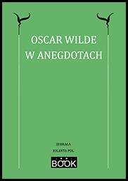

Oscar Wilde o sztuce i życiu |
|
|
Oscar Wilde – jeden z najwybitniejszych twórców angielskojęzycznych, twórca niezliczonej liczby paradoksów i aforyzmów, mistrz ciętej riposty – stał się bohaterem wielu anegdot, które zostały zebrane w tej publikacji. E-book dostarcza sporą dawkę humoru i intelektualnej rozrywki. Wybór i opracowanie: Jolanta Pol Wydawnictwo: JOOLBOOKRok wydania: 2020 E-BOOK, PDF, 3MB Liczba stron: 36 Cena: 12,60 zł ISBN: 978-83-958073-3-6 ZAMÓWIENIA: e-mailem na adres:joolbook@o2.pl bądź przez stronę: https://ebookpoint.plSPIS TREŚCI Słowo wstępneWokół biografii O swojej twórczości O sztuce i estetyce O Anglii i Ameryce O sławnych ludziach |
Wszelkie prawa zastrzeżone. Copyright © Jolanta Pol |
|